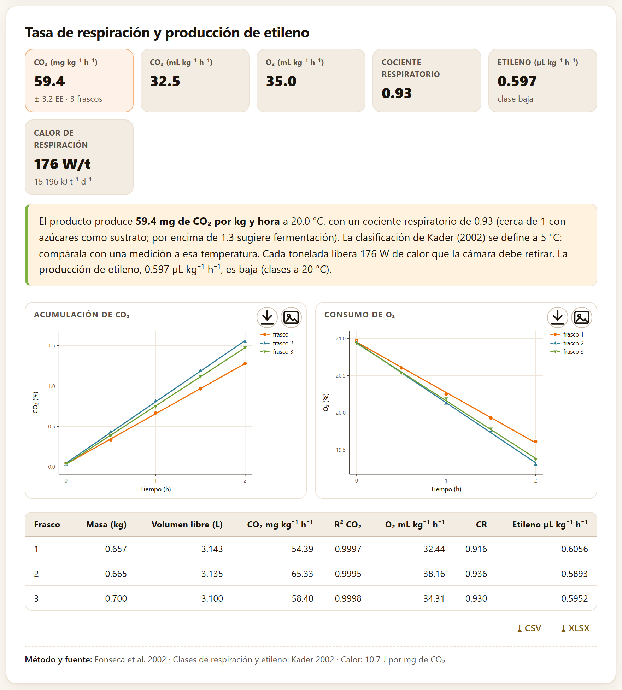
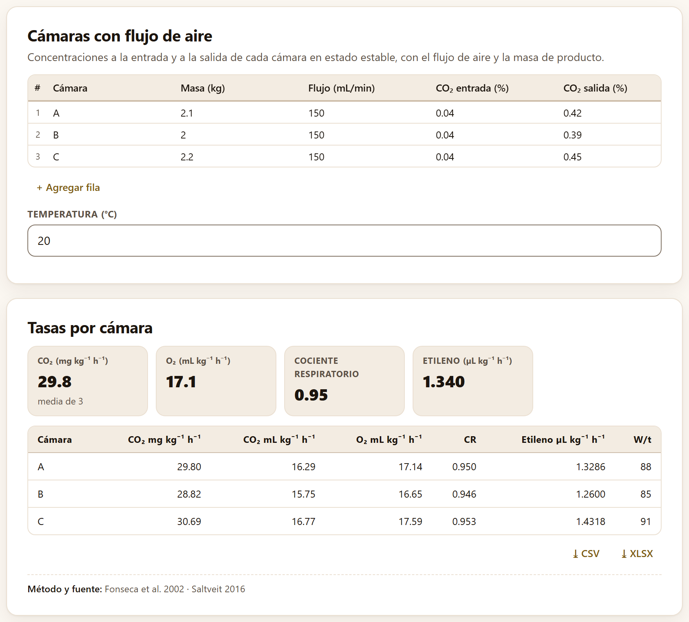
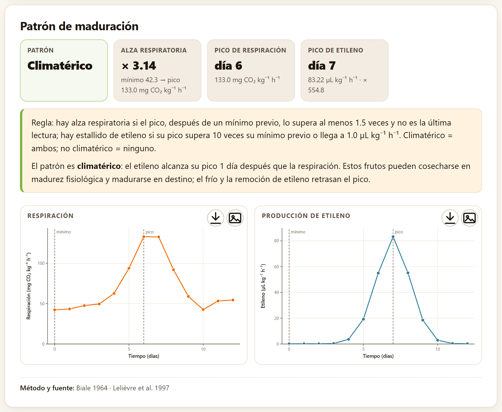
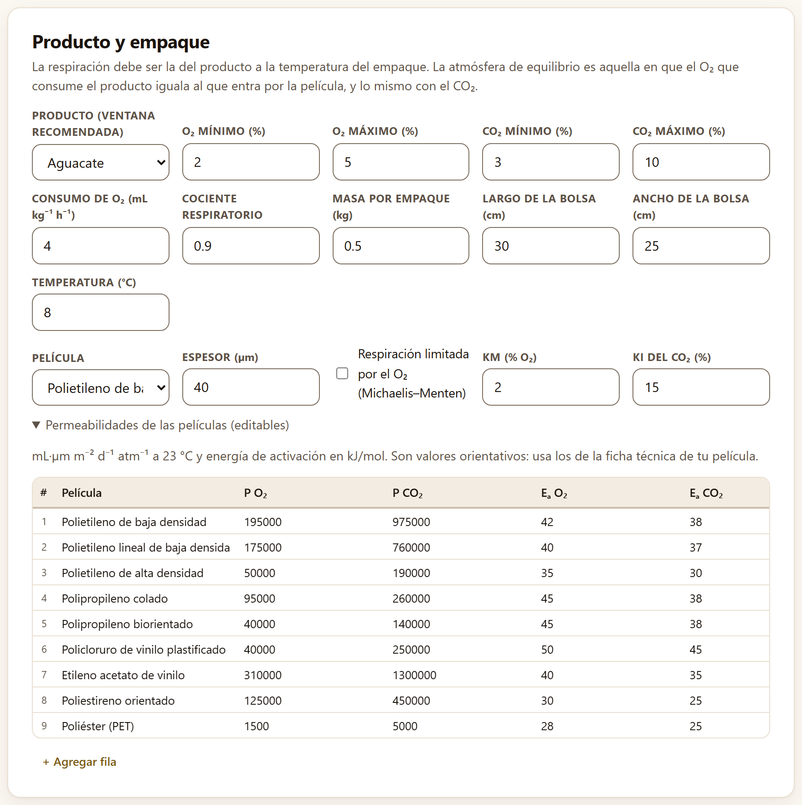
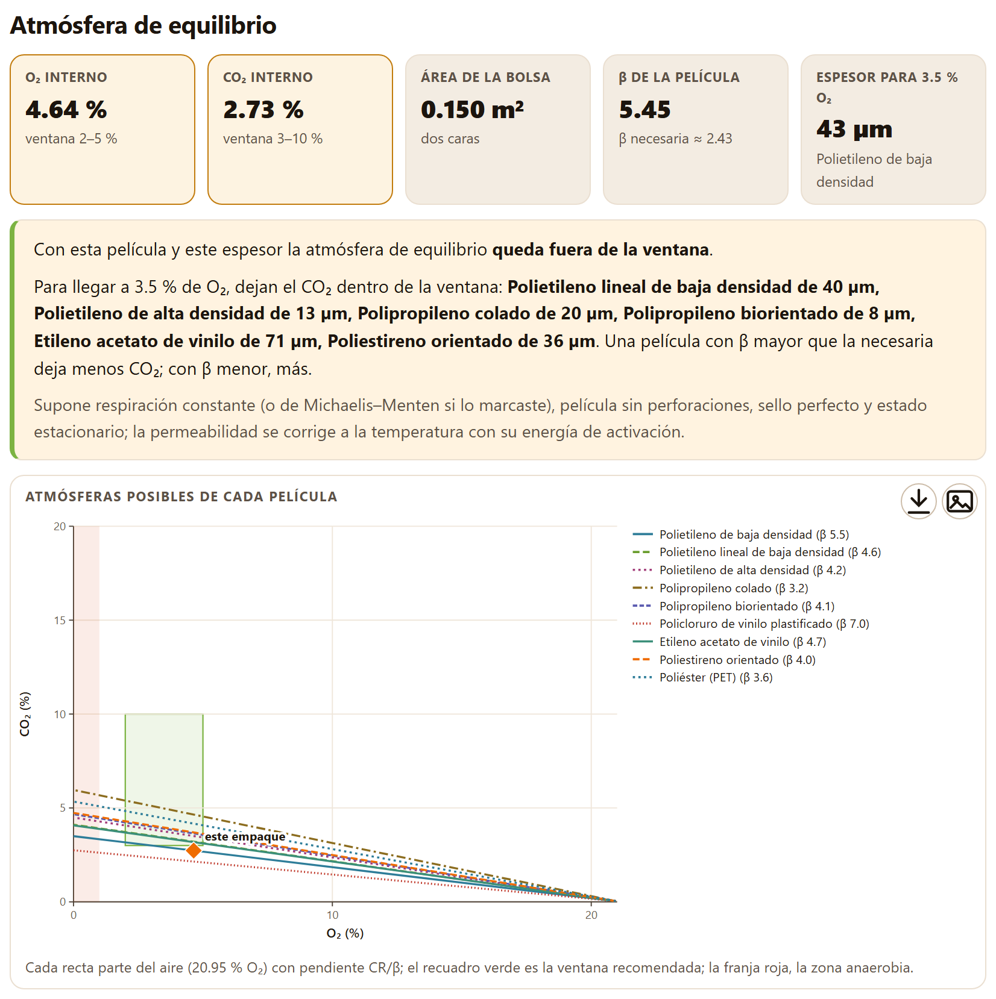
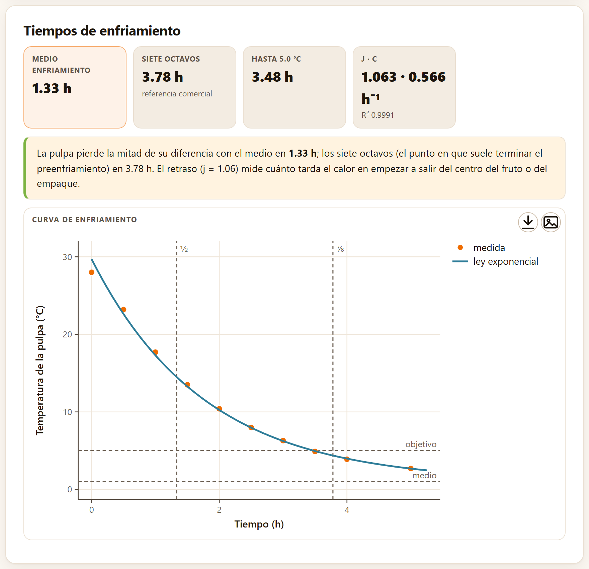
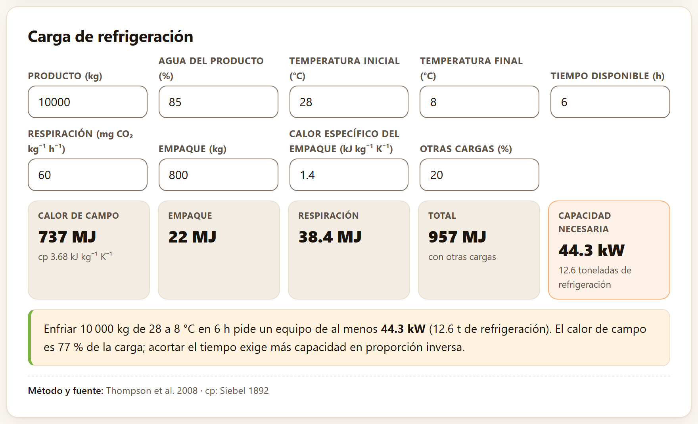

Un fruto cosechado sigue vivo: respira, libera calor y, si es climatérico, produce etileno y madura de golpe. Este bloque mide cuánto respira y cuánto etileno produce, reconoce el climaterio, busca la película y el espesor que llevan la atmósfera de un empaque a la ventana recomendada, y calcula cuánto tarda en enfriarse un lote y qué equipo de frío hace falta para lograrlo.
El Bloque 4 lleva por subtítulo «Tasas de respiración, climaterio, empaque en atmósfera modificada y preenfriamiento». Tiene cinco pestañas: Sistema estático, Flujo continuo, Climaterio, Atmósfera modificada y Preenfriamiento y carga térmica. Sólo dos leen una tabla con la entrada de datos común (sección 2.1): el sistema estático y el climaterio, que traen como ejemplo el aguacate «Hass» de ejemplo, simulado, en tres frascos y en una curva de doce días (sección I.7). Las otras tres abren con valores ya escritos en sus campos y en tablas editables, y se recalculan en cuanto cambias uno.
El método más sencillo para medir la respiración: se cierra el producto en un frasco de volumen conocido y se lee cómo sube el CO₂ —y, si se tiene con qué, cómo baja el O₂ y cómo se acumula el etileno— a varios tiempos. La tasa sale de la pendiente de cada gas contra el tiempo.
La tarjeta Lecturas en frasco cerrado pide dos columnas obligatorias, Tiempo (h) y CO₂ (%), y cinco opcionales: O₂ (%), Etileno (µL/L), Frasco o repetición, Masa (kg) y Volumen del frasco (L). Con la columna del frasco, la app calcula cada frasco por separado y después promedia. Debajo hay cinco campos:
El gas que se acumula en el frasco cabe en su volumen libre, V = volumen del frasco − masa/densidad. Una subida de la concentración de Δ % en ese volumen son Δ/100·V litros de gas. Por eso, si b es la pendiente del CO₂ en % por hora y m la masa en kilos:
con Vm = RT/P, el volumen molar del gas a la temperatura y la presión del ensayo (24.05 L/mol a 20 °C y 101.325 kPa). El consumo de O₂ es lo mismo con la pendiente cambiada de signo; el etileno, en µL kg⁻¹ h⁻¹, es la pendiente en ppm por hora por V/m. El cociente respiratorio es CR = CO₂ producido / O₂ consumido, en volumen: cerca de 1 cuando el sustrato son azúcares, menor con lípidos o ácidos grasos y mayor de 1.3 cuando empieza la fermentación (Fonseca et al. 2002; Kader 2002).

La tarjeta de resultados, Tasa de respiración y producción de etileno, da seis mosaicos: el CO₂ en mg kg⁻¹ h⁻¹ —la media de los frascos, con su error estándar y el número de frascos— y en mL kg⁻¹ h⁻¹, el O₂ en mL kg⁻¹ h⁻¹, el Cociente respiratorio, el etileno con su clase y el Calor de respiración en W por tonelada y en kJ por tonelada y día. Siguen la lectura, dos figuras —Acumulación de CO₂ y Consumo de O₂ (o Acumulación de etileno si no hay O₂) con los puntos y la recta de cada frasco y una leyenda con sus nombres— y la tabla por frasco con la masa, el volumen libre, la tasa de CO₂ y su R², la de O₂, el CR y el etileno.
Con Cargar ejemplo la app reconoce las siete columnas de aguacate_estatico.csv (tiempo_h, co2_pct, o2_pct, etileno_ppm, frasco, masa_kg y volumen_frasco_L), así que los campos de masa y volumen no se usan. Los tres frascos tienen 0.657, 0.665 y 0.700 kg de fruto y un volumen libre de 3.143, 3.135 y 3.100 L. Respiran 54.39, 65.33 y 58.40 mg CO₂ kg⁻¹ h⁻¹: la media es 59.4 ± 3.2 (EE, 3 frascos), que son 32.5 mL kg⁻¹ h⁻¹. Consumen 35.0 mL de O₂ kg⁻¹ h⁻¹, con un CR de 0.93, y producen 0.597 µL de etileno kg⁻¹ h⁻¹, clase «baja». Cada tonelada libera 176 W, o 15 196 kJ por día.
La app clasifica el etileno con las clases de Kader (2002), definidas a 20 °C: muy baja por debajo de 0.1, baja de 0.1 a 1, moderada de 1 a 10, alta de 10 a 100 y muy alta por encima de 100 µL kg⁻¹ h⁻¹. Las clases de respiración del mismo autor se definen a 5 °C; por eso la app no le pone clase a una respiración medida a otra temperatura, y la lectura lo recuerda: «La clasificación de Kader (2002) se define a 5 °C: compárala con una medición a esa temperatura». El aguacate del ejemplo, medido a 20 °C, sólo sirve para compararse con otros frutos a 20 °C.
El método supone que la respiración no cambia mientras el frasco está cerrado. Eso sólo vale mientras el O₂ no baje de unos 18–19 % ni el CO₂ suba de 1–2 %: más allá, la atmósfera del frasco empieza a frenar la respiración y la recta se curva. En el ejemplo, en dos horas el CO₂ llega a 1.3–1.6 % y el O₂ baja a 19.3–19.6 %, justo en el límite. Si alguna recta de CO₂ tiene R² < 0.95, la lectura añade: «Alguna recta de CO₂ tiene R² < 0.95: revisa fugas o lecturas atípicas».
En el sistema de flujo continuo una corriente de aire atraviesa la cámara del producto sin parar; cuando se estabiliza, la diferencia de concentración entre la entrada y la salida, por el flujo, es lo que respira el producto. Es el método para medir durante días sin que la atmósfera cambie.
La tarjeta Cámaras con flujo de aire es una tabla editable, una fila por cámara, con Cámara, Masa (kg), Flujo (mL/min), CO₂ entrada (%), CO₂ salida (%), O₂ entrada (%), O₂ salida (%), Etileno entrada (µL/L) y Etileno salida (µL/L); en una pantalla angosta la tabla se recorre de lado. Una fila nueva (+ Agregar fila) llega con el aire de entrada ya escrito (0.04 % de CO₂, 20.95 % de O₂ y 0 de etileno). Debajo, la Temperatura (°C) (20) sirve para pasar los mililitros a miligramos. Una fila sin masa o sin flujo no se calcula.
con F en mL/min. Para el O₂ la diferencia es la de entrada menos la de salida. La tarjeta Tasas por cámara da cuatro mosaicos con la media de las cámaras —CO₂, O₂, CR y etileno— y la tabla por cámara, que añade el CO₂ en mL y el calor en W/t y lleva el etileno en la columna Etileno µL kg⁻¹ h⁻¹ (Fonseca et al. 2002; Saltveit 2016).

Con los valores de partida, la cámara A (2.1 kg; CO₂ de 0.04 a 0.42 %) respira 29.80 mg CO₂ kg⁻¹ h⁻¹, la B 28.82 y la C 30.69; las tres liberan de 85 a 91 W por tonelada. La cámara A produce 1.3286 µL de etileno kg⁻¹ h⁻¹, la B 1.2600 y la C 1.4318.
Elige el flujo para que el CO₂ suba entre 0.1 y 0.5 % de la entrada a la salida: con menos, el error del analizador pesa demasiado; con más, la atmósfera de la cámara ya no es aire y la respiración cambia. Las tres cámaras de partida suben 0.35–0.41 %.
Los frutos climatéricos —aguacate, mango, plátano, jitomate— tienen, al madurar, un alza de la respiración acompañada de un estallido de etileno autocatalítico; los no climatéricos —cítricos, uva, fresa— no. Saber de qué tipo es un fruto decide si se puede cosechar verde y madurar en destino.
La tarjeta Curvas de respiración y etileno pide Tiempo y Respiración (CO₂ por kg y hora) y, opcional, Etileno (µL kg⁻¹ h⁻¹), medidos en los mismos frutos a lo largo de la maduración. Debajo hay cinco campos. Los dos primeros dicen en qué unidades vienen los datos, para escribirlas en los mosaicos, la lectura y los ejes de las figuras:
La app los propone por el nombre de la columna que eliges: dia o dias da días, y hora o un nombre terminado en _h da horas; un nombre de respiración con «ml» da mL y uno con «mg», mg. Si la propuesta no acierta, cámbiala: las unidades no cambian ningún cálculo, sólo cómo se escriben los resultados. El etileno se espera siempre en µL kg⁻¹ h⁻¹. Los otros tres campos fijan la regla:
| Alza respiratoria | El pico de respiración, después de un mínimo previo, lo supera al menos 1.5 veces y no es la última lectura. |
| Estallido de etileno | El pico de etileno supera 10 veces su mínimo previo, o llega a 1 µL kg⁻¹ h⁻¹. |
| Climatérico | Los dos; o el alza respiratoria sola si no hay columna de etileno. |
| No climatérico | Ninguno, con la respiración bajando o estable. |
| Incierto | Cualquier otro caso: por ejemplo, la respiración todavía sube en la última lectura, o hay alza sin estallido. |
La propia app lo dice: «La clasificación sigue una regla explícita (abajo): es una orientación, no un veredicto» (Biale 1964; Lelièvre et al. 1997).

La tarjeta Patrón de maduración da el Patrón, el Alza respiratoria con su mínimo y su pico en la unidad de la respiración, el Pico de respiración con su momento y su valor, y el Pico de etileno con su momento, su valor y su alza. La lectura escribe la regla con los umbrales que pusiste y la interpreta. Las dos figuras, Respiración y Producción de etileno, rotulan los ejes con sus unidades —Tiempo (días), Respiración (mg CO₂ kg⁻¹ h⁻¹) y Etileno (µL kg⁻¹ h⁻¹) en el ejemplo— y marcan con líneas verticales el mínimo y el pico que usó la regla.
En el aguacate del ejemplo, con las columnas dia y respiracion_mg, la app propone días y mg CO₂ kg⁻¹ h⁻¹. Los mosaicos dicen «Pico de respiración: día 6 · 133.0 mg CO₂ kg⁻¹ h⁻¹» y «Pico de etileno: día 7 · 83.22 µL kg⁻¹ h⁻¹ · × 554.8». El patrón es climatérico, y la lectura añade que «el etileno alcanza su pico 1 día después que la respiración». Después de los picos, la respiración baja a 42.7 el día 10 y vuelve a subir un poco al final (54.5 el día 12), como el fruto que entra en senescencia. Cuando el etileno alcanza su pico antes que la respiración, la lectura lo atribuye a la producción autocatalítica; cuando coinciden (menos de media unidad de diferencia), dice que los picos van juntos.
Si la respiración todavía sube en la última lectura, no hay forma de saber si ya llegó al pico, y la app responde «incierto»: «alarga la serie». Por la misma razón la serie debe empezar antes del alza: sin un mínimo previo, el cociente pico/mínimo no tiene sentido. Mide al menos cada día, y dos veces por día cerca del pico si el fruto madura rápido.
Dentro de una bolsa sellada, el producto consume O₂ y produce CO₂ mientras la película deja entrar O₂ y salir CO₂. Con el tiempo las dos corrientes se igualan y la bolsa llega a una atmósfera de equilibrio. Si esa atmósfera cae en la ventana que el producto tolera, la respiración se frena y la vida de anaquel se alarga; si el O₂ baja demasiado, el producto fermenta.
La pestaña no lee una tabla: la tarjeta Producto y empaque abre con un caso escrito —una bolsa de aguacate— y se recalcula con cada cambio. Sus campos, en tres renglones:
| Campo | De partida | Para qué |
|---|---|---|
| Producto (ventana recomendada) | Aguacate | Llena los cuatro campos de la ventana con los valores de Kader (2002) para el cultivo; Otra (escribe la ventana) deja escribirlos |
| O₂ mínimo (%) · O₂ máximo (%) | 2 · 5 | La ventana de O₂ |
| CO₂ mínimo (%) · CO₂ máximo (%) | 3 · 10 | La ventana de CO₂ |
| Consumo de O₂ (mL kg⁻¹ h⁻¹) | 4 | La respiración del producto a la temperatura del empaque |
| Cociente respiratorio | 0.9 | El CO₂ que se produce por cada volumen de O₂ |
| Masa por empaque (kg) | 0.5 | El producto dentro de la bolsa |
| Largo de la bolsa (cm) · Ancho de la bolsa (cm) | 30 · 25 | El área de película: las dos caras, 2 × 30 × 25 cm = 0.150 m² |
| Temperatura (°C) | 8 | Corrige la permeabilidad de la película |
| Película · Espesor (µm) | Polietileno de baja densidad · 40 | El empaque que se evalúa |
| Respiración limitada por el O₂ (Michaelis–Menten), Km (% O₂), Ki del CO₂ (%) | sin marcar · 2 · 15 | Que la respiración baje con el O₂ y la frene el CO₂ (ver abajo) |
La lista de productos trae diez ventanas: aguacate, mango, papaya, plátano, jitomate verde maduro, fresa, arándano, cereza, brócoli y manzana. Al elegir uno cambian sólo los cuatro campos de la ventana; la respiración, la masa y el empaque siguen siendo los que escribiste, así que cámbialos también.

El desplegable Permeabilidades de las películas (editables) guarda una tabla de nueve películas: polietileno de baja densidad, polietileno lineal de baja densidad, polietileno de alta densidad, polipropileno colado, polipropileno biorientado, policloruro de vinilo plastificado, etileno acetato de vinilo, poliestireno orientado y poliéster (PET). Para cada una da P O₂ y P CO₂ en mL·µm m⁻² d⁻¹ atm⁻¹ a 23 °C y las energías de activación Eₐ O₂ y Eₐ CO₂ en kJ/mol, con las que la app corrige la permeabilidad a la temperatura del empaque:
A 8 °C, el polietileno de baja densidad deja pasar menos de la mitad del O₂ que a 23 °C: el frío cierra la película casi tanto como frena la respiración. Son valores orientativos (Mangaraj et al. 2009): la tarjeta lo advierte y pide los de la ficha técnica de tu película. Puedes corregir una fila o añadir una película con + Agregar fila; la nueva aparece en el selector Película.
Sin marcar, la app supone que la respiración no depende de la atmósfera: el producto consume lo mismo a 4 % de O₂ que en el aire. Es la suposición conservadora, porque da el O₂ más bajo. Si marcas Respiración limitada por el O₂ (Michaelis–Menten), la respiración sigue r = Vm[O₂]/(Km + [O₂](1 + [CO₂]/Ki)), con inhibición no competitiva por el CO₂ (Lee et al. 1991). La app elige Vm para que la respiración en el aire sea el consumo que escribiste. Con los valores de partida, el O₂ interno sube de 4.64 a 8.10 % y el CO₂ baja de 2.73 a 2.16 %: el producto respira menos y la bolsa se queda con más O₂.
En estado estacionario, lo que respira el producto es igual a lo que atraviesa la película. De ese balance salen el O₂ y el CO₂ de la bolsa, el espesor que llevaría el O₂ al centro de la ventana y la razón de permeabilidades que haría falta para que el CO₂ caiga también dentro de ella.
con W la masa en kg, L el espesor en µm, A el área en m² y el factor 24 porque la respiración va por hora y la permeabilidad por día (Exama et al. 1993; Fishman et al. 1996). De ahí sale una propiedad clave: todas las atmósferas que puede dar una película, cambie lo que cambie el espesor, el área o la masa, caen sobre una recta que parte del aire con pendiente CR/β, donde β = PCO₂/PO₂ es la razón de permeabilidades de la película. El espesor sólo mueve el punto a lo largo de su recta; para cambiar de recta hay que cambiar de película.

La tarjeta Atmósfera de equilibrio da cinco mosaicos: O₂ interno y CO₂ interno con su ventana (en verde dentro de ella, en ámbar fuera y en rojo si hay anaerobiosis), el Área de la bolsa, la β de la película con la β necesaria, y el Espesor para el O₂ objetivo —el centro de la ventana de O₂— con la película elegida. La lectura dice si la atmósfera cae dentro o fuera, enumera las películas que, con el espesor que las lleva al O₂ objetivo, dejan también el CO₂ dentro de la ventana, y recuerda los supuestos. La figura Atmósferas posibles de cada película es el plano O₂–CO₂ con la recta de cada película —nombradas, con su β, en una leyenda en columna a la derecha—, la ventana y el punto del empaque, rotulado «este empaque» sobre un halo claro para que se lea encima de las rectas; la tabla da para cada película su β, el espesor para el O₂ objetivo, el CO₂ que resultaría y si queda dentro de la ventana.
| Película | β | Espesor (µm) | CO₂ (%) | Dentro de la ventana |
|---|---|---|---|---|
| Polietileno de baja densidad | 5.45 | 43 | 2.92 | no |
| Polietileno lineal de baja densidad | 4.63 | 40 | 3.43 | sí |
| Polietileno de alta densidad | 4.23 | 13 | 3.75 | sí |
| Polipropileno colado | 3.19 | 20 | 4.97 | sí |
| Polipropileno biorientado | 4.07 | 8.2 | 3.90 | sí |
| Policloruro de vinilo plastificado | 6.97 | 7.4 (no fabricable) | 2.29 | no |
| Etileno acetato de vinilo | 4.67 | 71 | 3.40 | sí |
| Poliestireno orientado | 4.01 | 36 | 3.95 | sí |
| Poliéster (PET) | 3.56 | 0.4 (no fabricable) | 4.45 | no |
Con los valores de partida, el polietileno de baja densidad de 40 µm deja la bolsa en 4.64 % de O₂ y 2.73 % de CO₂: «queda fuera de la ventana», porque el CO₂ no llega al 3 %. Su β es 5.45, y la β necesaria para caer en el centro de la ventana (3.5 % de O₂ y 6.5 % de CO₂) es 2.43: con β tan alta, el CO₂ sale de la bolsa demasiado rápido. Llevar esa misma película a 3.5 % de O₂ pide 43 µm y deja el CO₂ en 2.92 %, todavía fuera. Seis películas sí llegan: polietileno lineal de baja densidad de 40 µm, polietileno de alta densidad de 13 µm, polipropileno colado de 20 µm, polipropileno biorientado de 8 µm, etileno acetato de vinilo de 71 µm y poliestireno orientado de 36 µm. Si eliges en Película el polietileno lineal de 40 µm, la bolsa queda en 3.55 % de O₂ y 3.42 % de CO₂, «dentro de la ventana recomendada».
Un espesor fuera de 8–150 µm no se puede fabricar ni sellar como bolsa: la tabla lo marca «(no fabricable)» y la película no cuenta como solución aunque su CO₂ caiga en la ventana, como el PET, que necesitaría 0.4 µm. Cuando ninguna película llega, la lectura lo dice y da la β que haría falta, «o microperforaciones»: es lo que ocurre con el mango (ventana 3–5 % de O₂ y 5–8 % de CO₂, β necesaria ≈ 2.36), que con la misma bolsa no encuentra película en la tabla.
| Si la recta de una película cruza el recuadro verde… | hay un espesor de esa película que lleva la bolsa a la ventana: el de la tabla, si está entre 8 y 150 µm. |
| Si la recta pasa por debajo del recuadro… | la película deja salir demasiado CO₂ (β mayor que la necesaria): busca una de β menor. |
| Si la recta pasa por encima… | la película retiene demasiado CO₂ (β menor que la necesaria): busca una de β mayor. |
| Si el O₂ interno baja de 1 %… | riesgo de anaerobiosis («Riesgo de anaerobiosis»): más área, menos espesor, una película más permeable o menos producto. |
| Si ninguna película llega… | la β necesaria es menor que la de cualquier película sin perforar; con microperforaciones, que dejan pasar los dos gases casi igual, se baja la β del conjunto. |
La app calcula el estado estacionario con película sin perforaciones y sello perfecto; no dice cuánto tarda la bolsa en llegar a él (sección I.10).
Quitar el calor de campo cuanto antes es la medida más barata para alargar la vida de anaquel. El preenfriamiento —con aire forzado, agua, hielo o vacío— baja la temperatura de la pulpa siguiendo, después de un retraso inicial, una curva exponencial hacia la del medio.
La tarjeta Curva de enfriamiento es una tabla editable de Tiempo (h) y Pulpa (°C), con la Temperatura del medio (°C) (1) y la Temperatura objetivo (°C) (5). Abre con una curva simulada de aire forzado: diez lecturas de 0 a 5 h que bajan de 28.0 a 2.7 °C. Hacen falta al menos tres lecturas. La app ajusta la ley exponencial a la temperatura adimensional:
por mínimos cuadrados sobre ln Y, con Ti la primera lectura. C es el coeficiente de enfriamiento (h⁻¹) y j el factor de retraso: cuánto tarda el calor en empezar a salir del centro del fruto o del empaque; j = 1 quiere decir sin retraso (Thompson et al. 2008).

La tarjeta Tiempos de enfriamiento da el Medio enfriamiento, los Siete octavos («referencia comercial»), el tiempo Hasta la temperatura objetivo y j · C con el R² del ajuste. En la curva de partida, j = 1.063 y C = 0.566 h⁻¹ (R² 0.9991). La curva ajustada arranca un poco por encima de la primera lectura (28.0 °C) precisamente porque j > 1.
A los siete octavos la pulpa ya perdió 7/8 de su diferencia con el medio: en el ejemplo, de 28 °C con aire a 1 °C, queda a unos 4.4 °C. Es donde suele terminar el preenfriamiento comercial: el último tramo, cada vez más lento, se termina en la cámara de almacenamiento. El tiempo de medio enfriamiento no depende de la temperatura inicial, así que sirve para comparar túneles, empaques o acomodos.
El equipo de frío debe retirar, en el tiempo disponible, el calor de campo del producto, el del empaque, el que el producto genera al respirar y lo que entra por otros lados. La tarjeta Carga de refrigeración, en la misma pestaña, lo suma y lo convierte en capacidad.
Sus campos, con los valores de partida: Producto (kg) 10 000, Agua del producto (%) 85, Temperatura inicial (°C) 28, Temperatura final (°C) 8, Tiempo disponible (h) 6, Respiración (mg CO₂ kg⁻¹ h⁻¹) 60, Empaque (kg) 800, Calor específico del empaque (kJ kg⁻¹ K⁻¹) 1.4 y Otras cargas (%) 20 (infiltración, ventiladores, luces y personas). La respiración debe ser la del producto a la temperatura media del enfriamiento.
El calor específico sale del contenido de agua por la fórmula de Siebel (1892) y la capacidad se da también en toneladas de refrigeración (1 t = 3.517 kW).

Con 85 % de agua, cp = 3.68 kJ kg⁻¹ K⁻¹, y el calor de campo es 10 000 × 3.68 × 20 = 737 MJ. El empaque aporta 800 × 1.4 × 20 = 22 MJ, y la respiración, 60 mg CO₂ kg⁻¹ h⁻¹ durante 6 h, 38.4 MJ. Con el 20 % de otras cargas el total es 957 MJ, que en 6 h son 44.3 kW (12.6 t de refrigeración). La lectura añade que el calor de campo es el 77 % de la carga y que acortar el tiempo exige más capacidad en proporción inversa: enfriar lo mismo en 3 h pediría el doble de equipo.
| Lo que ves | Lo que significa |
|---|---|
| CR entre 0.7 y 1.3 | Respiración aerobia normal; por encima de 1.3, la app avisa «posible respiración anaerobia» |
| Etileno de clase alta o muy alta | Un productor fuerte: no lo guardes con productos sensibles (sección 8.6) |
| Patrón «Climatérico» | Se puede cosechar en madurez fisiológica y madurar en destino; el frío y la remoción del etileno retrasan el pico |
| O₂ interno dentro y CO₂ fuera de la ventana | La película tiene la β equivocada: cambiar el espesor no basta, hay que cambiar de película |
| j mucho mayor que 1 | El calor tarda en salir del centro: empaque con poca ventilación (sección 8.2) o frutos grandes |
| Calor de campo cerca del 80 % de la carga | Lo normal: el producto caliente es casi todo lo que el equipo tiene que quitar |